Die wichtigsten Schritte auf der Prognoseplattform von arq decisions
Einstellungen und Anonymität
Nach dem Einloggen finden Sie rechts oben Ihren Avatar. Durch Klicken öffnet sich dort Ihr Profil-Menü. Neben der Sprachwahl finden Sie dort drei Punkte, über die Sie u.a. Ihr Profil bearbeiten können.
Der Abschnitt „Konto bearbeiten“ hat vier Reiter.
Öffentliche Informationen. Dort können Sie ein Profilbild hochladen, einen Anzeigenamen wählen, der auf der Plattform anstelle Ihres Benutzernamens verwendet wird, sowie eine Kurzbeschreibung über Sie bereitstellen. Den Anzeigennamen können Sie selbstständig jederzeit frei ändern.
Sicherheit. Dort können Sie die Angaben aus der Registrierung (E-Mail, Benutzername, vollständiger Name, Passwort) anpassen.
E-Mail-Einstellungen. Falls der Administrator Systembenachrichtigungen freigegeben hat, können Sie dort regeln, wie häufig Sie vom System über aktuelle Bewegungen auf der Plattform benachrichtigt werden wollen. Benachrichtigungen sind zunächst ausgestellt.
Eigenschaften. Dort kann die Organisation optional Nutzern Merkmale zuweisen, bspw. Statusgruppe, Ort, Rolle. Diese Funktion ist für dieses Projekt nicht vorgesehen.
Prognosen: Fragenübersicht, Einschätzen und Kommentieren
Klicken Sie auf das Logo oder auf den Reiter „Fragen“ im Hauptmenü in der Kopfzeile, kommen Sie zur Fragenübersicht. Diese Seite besteht hauptsächlich aus zwei Teilen: den auswählbaren Fragen und dem Feed Ihrer Gruppen.
Die Fragen sind in zwei Kategorien unterteilt: „Verfügbar“ und „aktiv“. Verfügbare Fragen stehen zur Einschätzung bereit und sind von Ihnen bislang noch nicht beantwortet worden. Aktive Fragen sind jene, die Sie schon mindestens einmal beantwortet haben und für Kommentare und neue Einschätzungen offen sind.
Für die Fragen stehen Ihnen verschiedene Filteroptionen zur Verfügung. Zudem können Sie über die Tabs schnell nach Themenkomplex der Fragen filtern.
Wählen Sie die Frage aus, zu der Sie Ihre erste Einschätzung abgeben möchten und klicken Sie dafür auf „Beantworten“, um auf die Fragenseite zu gelangen.
Diese Fragen sind immer als Eintritt eines möglichen zukünftigen Ereignisses formuliert, sodass an einem bestimmten Zeitpunkt festgestellt werden kann: Ja oder nein. Unten stehen Ihnen Informationen zum Hintergrund der Frage bereit.
Von Ihnen ist eine Einschätzung der Wahrscheinlichkeit, dass dieses Ereignis eintritt und/oder ein Kommentar zum Ereignis gefragt.
Dafür können Sie den Schieberegler entsprechend positionieren – ob impulsiv aus dem Bauch, oder Ergebnis einer Analyse, jeder Beitrag ist wertvoll.
Wenn Sie Ihre Einschätzung absenden möchten, haben Sie die Optionen „Absenden“ und „Absenden & Weiter“, was Sie direkt zur nächsten Frage bringt.
Nach der ersten Eingabe zeigt Ihnen die Grafik den Verlauf Ihrer individuellen Einschätzung, sowie den der Gruppen, in denen Sie Mitglied sind. Am unteren Rand können Sie jederzeit Ihre Einschätzung, ggf. inkl. eines Kommentars, anpassen.
Auf der rechten Seite finden Sie den Kommentar-Feed zur Frage. Hier sehen Sie die individuellen Einschätzungen und Kommentare der Mitglieder aus Ihren Gruppen. Sie können dort direkt Kommentare verfassen, auf Kommentare antworten oder reagieren (mit einem Like o.ä.).
Sowohl für die Grafik als auch für den Feed stehen Ihnen verschiedene Filter- und Sortieroptionen zur Verfügung. Sollten Sie auf einen Nutzer stoßen, dem Sie Ihre Einschätzung „anvertrauen“ möchten, können Sie bei den Tabs unter dem Fragetitel „Delegierten zuweisen“. Ab diesem Moment entsprechen Ihre Einschätzungen bei dieser Frage denen des ausgewählten Nutzers; dessen Einschätzungen bekommen also doppeltes Gewicht.
Die von Ihnen beantwortete Frage taucht nun in der Übersicht unter „Aktiv“ auf. Der Feed auf der rechten Seite ist nun ebenfalls mit Kommentaren andere Nutzer, mit denen Sie mindestens eine Gruppe teilen, gefüllt.
Für Sie besonders relevante Fragen können Sie mit dem Stern-Symbol als Favorit kennzeichnen, um diese besonders schnell aufrufen zu können.
Sobald eine Frage abgeschlossen wurde, lässt sie sich über die Community einsehen. Dort finden Sie eine Übersicht über die Feeds nach Fragen geordnet, eine nach Nutzern, denen Sie folgen (Following) und eine für die bewerteten Fragen.
Bewertete Fragen sind mit einer Punktzahl zwischen -900 und +100 kommentiert. Zur Ermittlung der Punktzahl wird Ihre Einschätzung an jedem Tag, an dem die Frage zur Einschätzung zur Verfügung stand, berücksichtigt.
Es wird jeweils der Abstand von Ihrer Einschätzung zum tatsächlichen Ergebnis betrachtet. Z.B., wenn ein Ereignis eingetreten ist, und Ihre Einschätzung betrug 85%, dann geht die Differenz zu 100% in die Bewertung ein. Bei der Punkte Regel gilt: Mit absoluter Sicherheit getippt und richtig gelegen (0% und nicht eingetreten, oder 100% und eingetreten) gibt 100 Punkte, mit absoluter Sicherheit getippt und falsch gelegen gibt -900 Punkte, nicht getippt oder 50% gibt 0 Punkte für einen Tag. Ihre Punktzahl je Frage ist der Durchschnitt über alle Tage. Ihre Gesamtpunktzahl ist in Ihrem Profil einsehbar.
Die Punktzahl ist nicht öffentlich einsehbar und hat zwei Funktionen. Einerseits dient sie als persönliche Reflexion: wo hat man gut gelegen, wo nicht ganz so gut, wo war man zu sicher, wo zu vage. Positive Punktzahlen geben generell an, dass die Einschätzungen zum Informationsgewinn beigetragen haben. Während im Einzelfall immer Glück eine erhebliche Rolle spielen kann, ist die Punktzahl über mehrere Fragen dennoch ein guter Anhaltspunkt zur eigenen Urteilskraft. Die zweite Funktion ist die Möglichkeit zur Gamifizierung. Die Punkte bringen die Einschätzungen auf eine bewertbare Skala, sodass die Administratoren auch Anreize setzen können, sich mit bestimmten Fragen insbesondere zu auseinanderzusetzen.